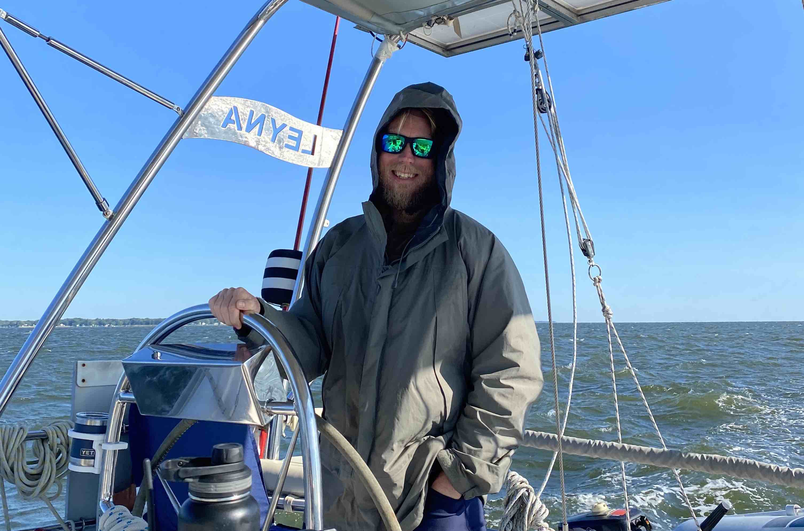

Virtual/Fractional CISO
Do any of these sound familiar?
- You're a securtity lead stuck in meetings all day, unable to manage the needs of the organization.
- You have enough confusing cybersecurity services that you aren't sure if there is overlap, or if you are even protected well enough.
- Your infrastructure has grown so much that you need a fresh audit of your cybersecurity controls, but don't need extended full-time assistance.
A vCISO from Proteus Advisors can help you solve some of these problems by tailoring the engagement to the specific needs of your organization. We work with all levels of an organization, from keyboard to board room, to help achieve a balance between coverage, risk, and cost. We generate roadmaps that organizations can implement themselves with in-house staff, recommend service consolidation, and try to determine the most cost-effective way to secure your organization based on your business risks and footprint.
Cyber Tool Development
Whether you are developing for servers or the cloud, Proteus Advisors offers contracted software development services focused on cyber tool development. Our current expertise includes:
- Client software with paired containerized server services
- Cloud designed applications
- Automated specialized tool testing
- Additional experience in virtualization platforms, containerization software, microservice design, and integrating software with third party APIs and platforms
Whether you are looking to temporarily augment a team or to fill a long term contract, reach out and see if our experience can help get your mission critical software to the end user.
Veteran Assistance
For Companies
Do you want to hire veterans, but aren't sure how? The U.S. Military offers up to six month internships for transitioning service members with no cost to the host company, and the veterans keep getting paid by their service. These programs are great for organizations interested in hiring skilled veterans! Help a transitioning veteran land on their feet and demonstrate their value in the ACTUAL job you want to hire them for!
For no fee, Proteus Advisors will provide an overview of the DOD Skillbridge Programs, help fill out service specific forms, and help you structure a successful mentorship and training program. We have personally assisted 15+ transitioning veterans, so learn from our experiences for free!
For Veterans
On the hunt for a Company supporting Skillbridge fellowships, or have one who isn't quite sure how to get it to SP? It can be hard getting everything to align with a company, the education/transition office, and your command. We have personally helped mentor 15+ veterans in Skillbridge programs we have been a part of, so we know that you are just looking for somewhere to give you a chance. Our motivation is simply to ensure you land on your feet, no matter where that is.
For no fee, we can help you find or explain to a Company how to navigate the Skillbridge application and approval process and help start your journey outside the service. Or, if you want to discuss the challenges of transition, reach out!
About

Adrian Tilston is our principal advisor and founder, and the source of the "Old Man of the Sea" company name. His experiences range from defending networks from NSA intrusion during college competitions to advising Senior Foreign Government and Military leaders as a Green Beret. He is at home on the keyboard writing client software in C as he is mapping cybersecurity requirements to business cases. He likes to joke he has started the transition to cyborg life with the rods on his spine he recived during a spinal fusion in 2017 from a traumatic military injury. He LOVES solving complex problems, and his background in making the mission happen with limited resources fits well with security teams trying their best with a limited budget.
Reach out today and we can get Adrian helping you with your needs!
Contact
In a constant effort to avoid spam, we have ingeniously encoded our email address below (remember it's .co!). Or if you are looking for more networking, feel free to reach out on LinkedIn.
-
info [at] proteusllc [dot] co
- Proteus Advisors LinkedIn